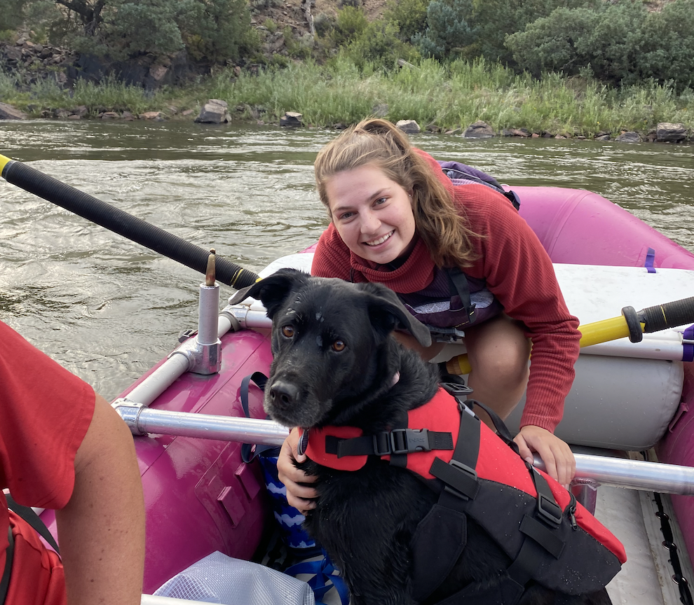
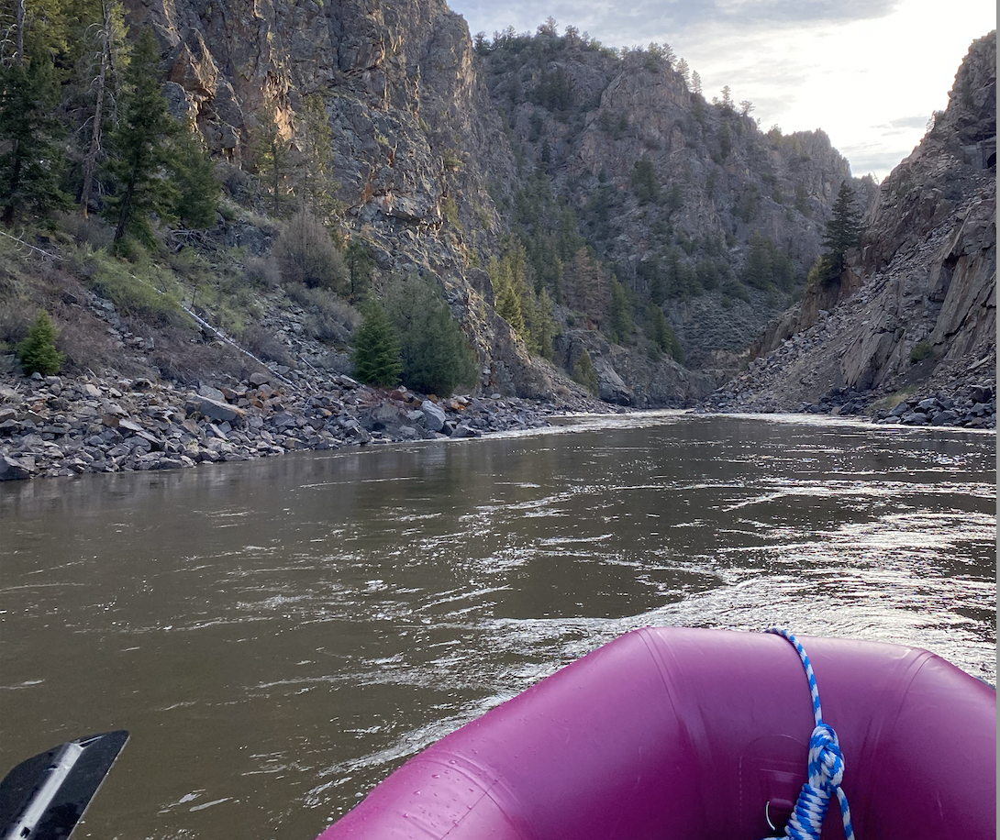
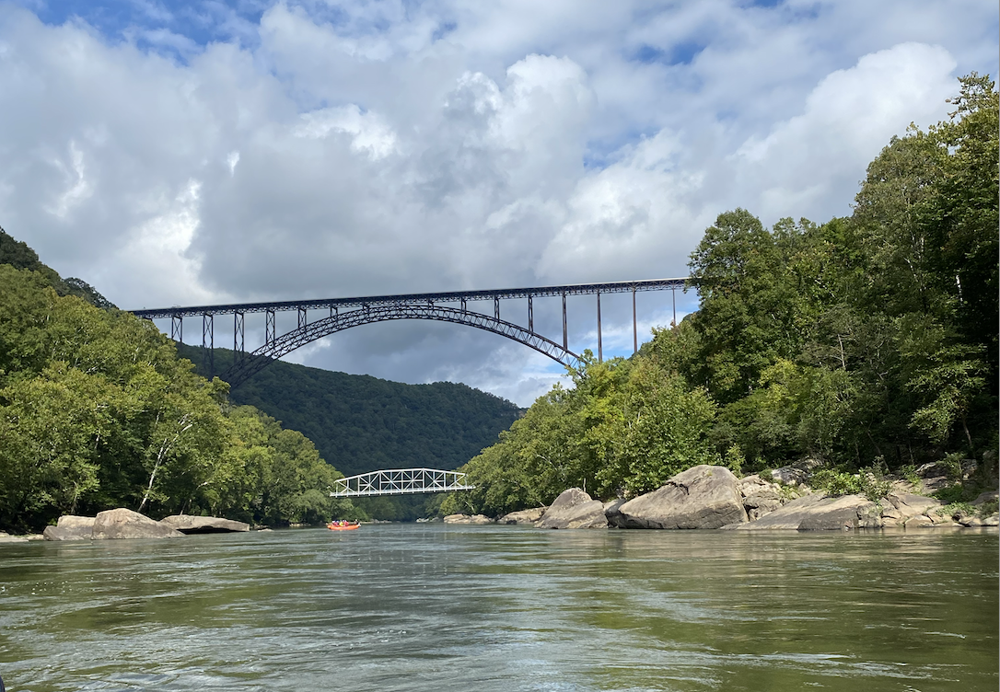
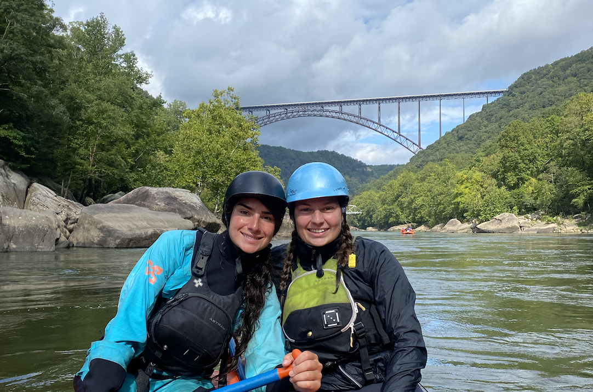
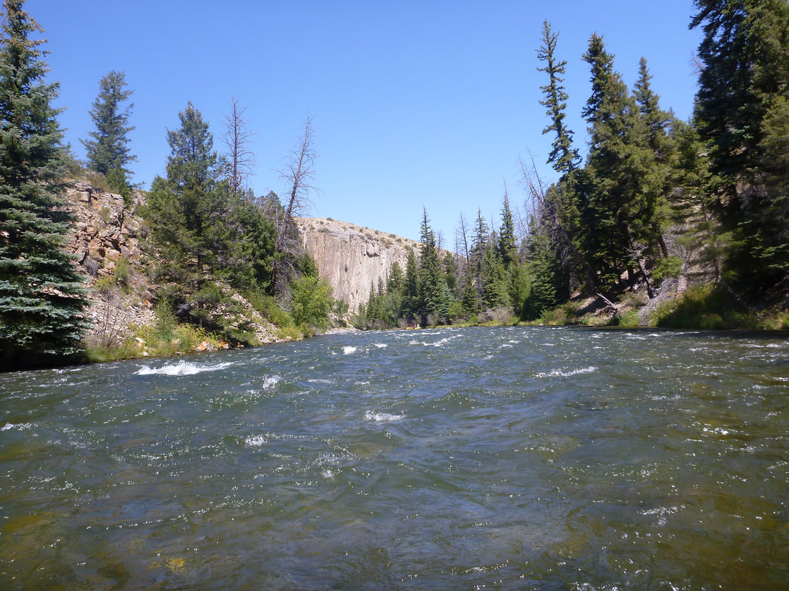

Upper Colorado
The Upper C is a nice mellow float that varies between 5-30 miles with mild Class III rapids. Pumphouse to Radium is a nice 5 mile float through Little Gore Canyon.
 West Virginia
West Virginia is home to some of the country's most intense whitewater. The Upper Gauley is home to infamous Class V Rapids, and the trip ends with a 16 foot pourover/waterfall called Sweets Falls. The Lower New River and Lower Gualey also offer intense Class V rapids such as the Keeneys and Upper & Lower Mash.
 Blue River
The Lower Blue River is a 14 mile stretch started at the Green Moutain Resevoir Dam. It consist of Class II-III rapdids witha a Class VI put in!
